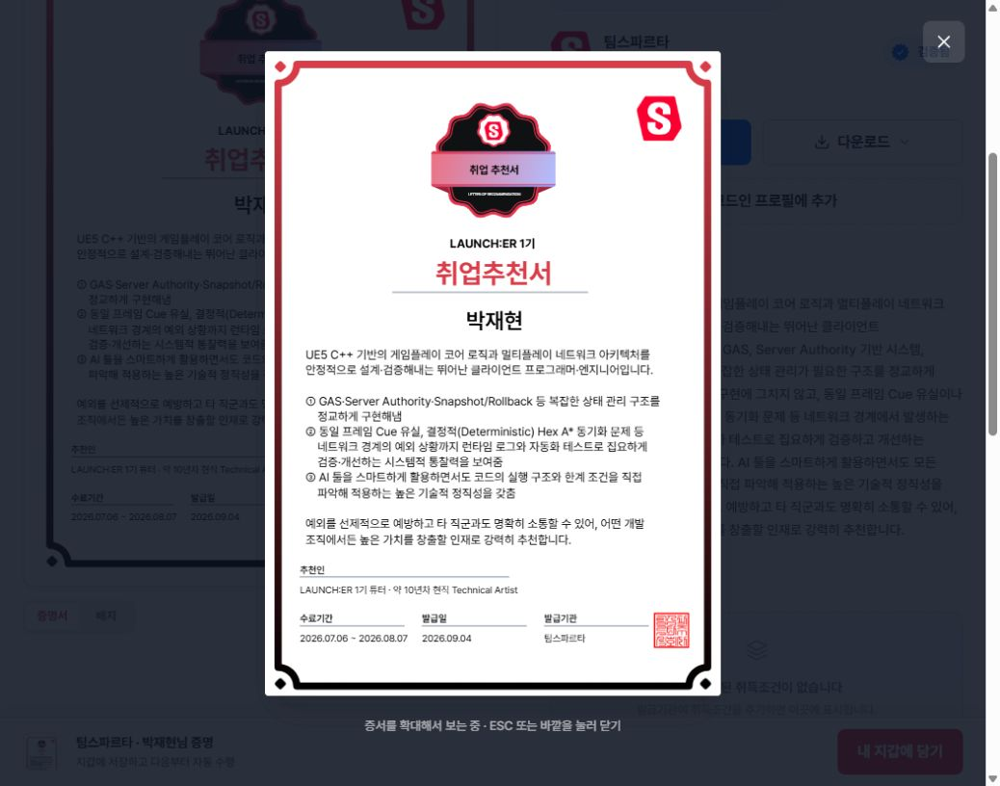
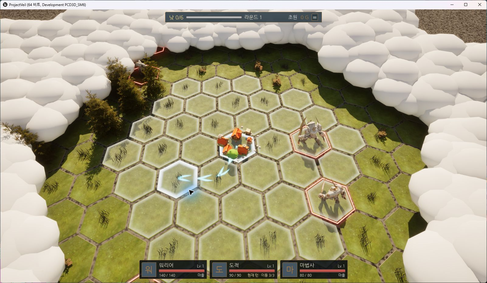

추천서 원본 보기 ↗EXTERNAL REFERENCE · LAUNCH:ER 1기
팀스파르타 취업추천서
UE5·C++ 게임플레이 구현과 상태 관리, 네트워크 검증 및 AI 도구 활용에 대한 외부 추천입니다.
추천서 원본 및 발급 정보 확인 ↗발급기관 공개 화면 미리보기 · 클릭하면 원본이 열립니다.
GAMEPLAY PROGRAMMER / PORTFOLIO
전투와 탐험, 인벤토리와 저장.
플레이의 흐름을 연결하는 시스템을 만듭니다.
1인 개발과 팀 프로젝트에서 맡은 기능, 설계 판단, 코드 근거를 정리했습니다.
ProjectVeil · 1인 RPG 개발
게임플레이 · 저장/복원 · 네트워크
Git · Codex · Claude Code

추천서 원본 보기 ↗EXTERNAL REFERENCE · LAUNCH:ER 1기
UE5·C++ 게임플레이 구현과 상태 관리, 네트워크 검증 및 AI 도구 활용에 대한 외부 추천입니다.
추천서 원본 및 발급 정보 확인 ↗발급기관 공개 화면 미리보기 · 클릭하면 원본이 열립니다.
실패 시 장비와 관련 효과를 함께 되돌리는 구조
PERSISTENCE월드 상태의 저장·복원플레이어·건축물·드랍 아이템을 ID와 값으로 재구성
NETWORKED GAMEPLAY서버 상태와 UI의 연결요청·상태 변경·복제 알림의 역할을 분리
요약에서 담당 범위를, 상세에서 구현 근거를 확인할 수 있습니다.

실제 개발 빌드 캡처전투 · 헥스 탐험 · 장비 · 저장 · 개발 도구
장비 복원의 부분 실패, 전투 이벤트의 순서, 동일 비용 경로의 선택 규칙을 다룹니다.
담당 구현과 코드 보기월드 슬롯 · 저장/복원 · 옵션 · 키 설정 · 로딩
월드별 저장 데이터와 목록을 분리하고, 플레이어·건축물·드랍 아이템을 다시 구성합니다.
담당 구현과 코드 보기플레이어 액션 · 인벤토리 · 장비 · UI
UI의 요청, 서버의 상태 변경, 복제 알림 이후 화면 갱신을 나눠 구성했습니다.
담당 구현과 코드 보기팀·캐릭터 선택 · 전투 진입
맵과 Pawn이 바뀌어도 팀·캐릭터·준비 상태가 이어지도록 구성했습니다.
담당 구현과 코드 보기플레이어 이동·공격 · 스킬 슬롯 · 쿨다운 UI
스킬 설정 데이터를 입력 슬롯과 분리하고 사용 상태를 UI와 연결했습니다.
담당 구현과 코드 보기총기 로직 · 애니메이션 연결 · 터렛
초기 총기 구현에서 캐릭터·애니메이션과 상호작용하는 흐름을 경험했습니다.
담당 구현과 코드 보기대표 프로젝트 외의 공개 작업 기록
서버가 확정하는 값, UI가 표현하는 값, 맵 이동 후에도 유지할 값을 구분하며 시스템을 연결합니다.
정상 동작 외에 부분 적용·빈 데이터·중복 입력 같은 경계를 살피고, 반복 확인할 항목은 테스트와 도구로 옮깁니다.
Codex·Claude Code를 코드 탐색과 구현·테스트 초안에 활용합니다. 변경된 코드와 실제 실행에서 확인한 범위를 구분합니다.
EDUCATION
스파르타 내일배움캠프 언리얼 과정
가상융합기술아카데미 언리얼 전공